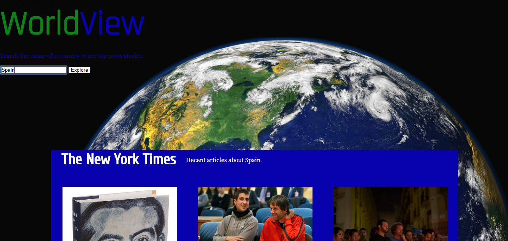

A little about me:
I'm a hiker,
craft beer lover,
cinefile,
and front-end web developer.
I wrote my first piece of code in elementary when my dad showed me how to make my own Mad Libs using crude JavaScript and HTML. I lost interest after I learned how to make bookmarks with glue and my pencil case, but years later I decided to pick up where I had left off. Learning to code round two was significantly harder than round one, but I walked away addicted to the high of solving code puzzles. I look forward to applying my new skills and feeding my new habit.
This is my Portfolio:
Travelogue allows users to save journals and places from their travels across the USA.
Check it out by logging into the demo account:
username: abc@abc.com
password: abc
GitHub
Demo

WorldView is an app uses New York Times APIs to give users a quick snapshot of a country or region.
GitHub
Demo
Tempest is an app that uses your location and finds bars in your area based on how busy or full they are, per other user ratings.
GitHub
Demo